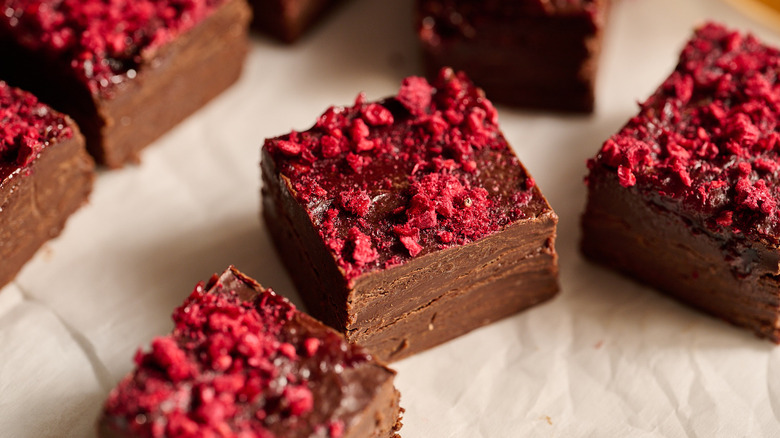
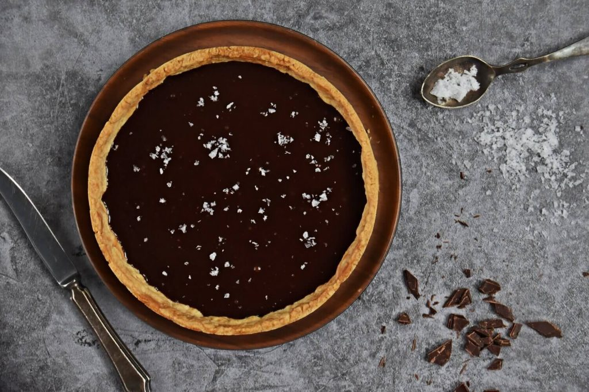

Dark Chocolate Raspberry Fudge
Ingredients
- Butter
- Condensed Milk
- Chocolate Chips
Recipe
- Place baking chips in a single layer on a small baking sheet. Freeze 30 minutes. Line a 9-in. square pan with foil; grease foil with butter.
- In a large microwave-safe bowl, combine dark chocolate chips and milk. Microwave, uncovered, on high for 2 minutes; stir. Microwave in additional 30-second intervals, stirring until smooth. Stir in liqueur and salt. Add white baking chips; stir just until partially melted. Spread into prepared pan. Refrigerate 1 hour or until firm.
- Using foil, lift fudge out of pan. Remove foil; cut fudge into 1-in. squares. Store in an airtight container in the refrigerator.

Salted Dark Chocolate Tart
Ingredients
- Butter
- Condensed Milk
- Chocolate Chips
- Salt
- Caramel
Recipe
- In a small bowl, combine cookie crumbs and butter; press onto the bottom and up the side of a greased 9-in. fluted tart pan with removable bottom. Cover and refrigerate for 30 minutes.
- For caramel, in a large heavy saucepan, spread sugar; cook, without stirring, over medium-low heat until it begins to melt. Gently drag melted sugar to center of pan so sugar melts evenly. Cook, without stirring, until melted sugar turns a medium-dark amber, 5-10 minutes. Immediately remove from heat, then slowly stir in cream, butter, and salt. Pout into crust, refrigerate 20 minutes.
- Place chocolate in a large bowl. In a small saucepan, bring cream just to a boil. Pour over chocolate; let stand 2 minutes. Stir until smooth. Stir in vanilla.
- Pour chocolate mixture over caramel. Sprinkle with sea salt. Refrigerate for at least 2 hours. Remove from the refrigerator about 30 minutes before serving.
